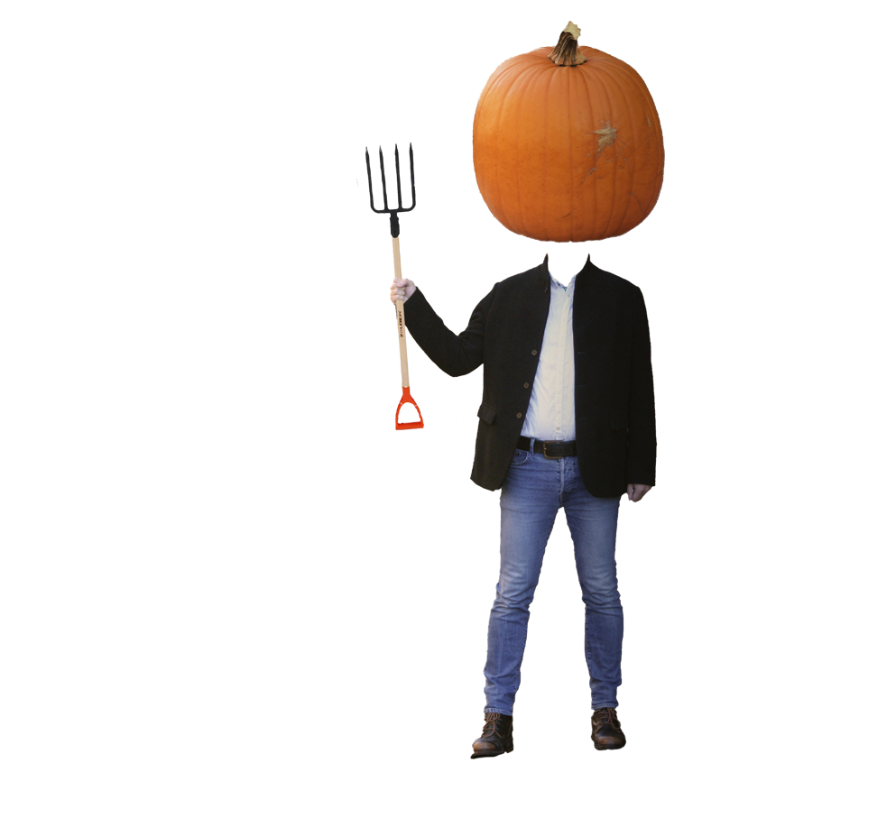
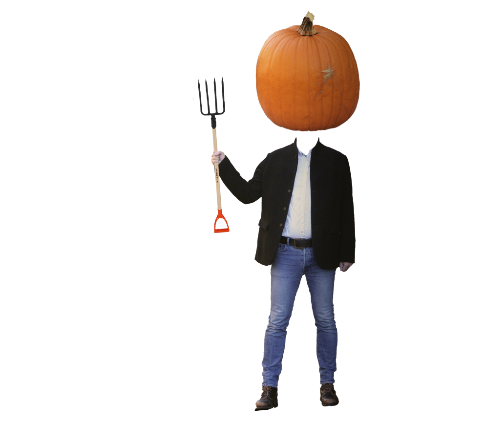

Pumpkins are often mistaken for vegetables because the classic variety,
the kind we use at Halloween, is actually not naturally sweet,
explains the director of nutrition at New York's Institute of Culinary Education. But there are more than 30 varieties of pumpkins
grown and sold in popular markets, and some are naturally sweet
like other fruits we know and love. A few of the favorites
include heirloom Jarrahdale and Kabocha pumpkins, they are often utilized in
Japanese cuisine for their coyly sweet flavor profile.
 
